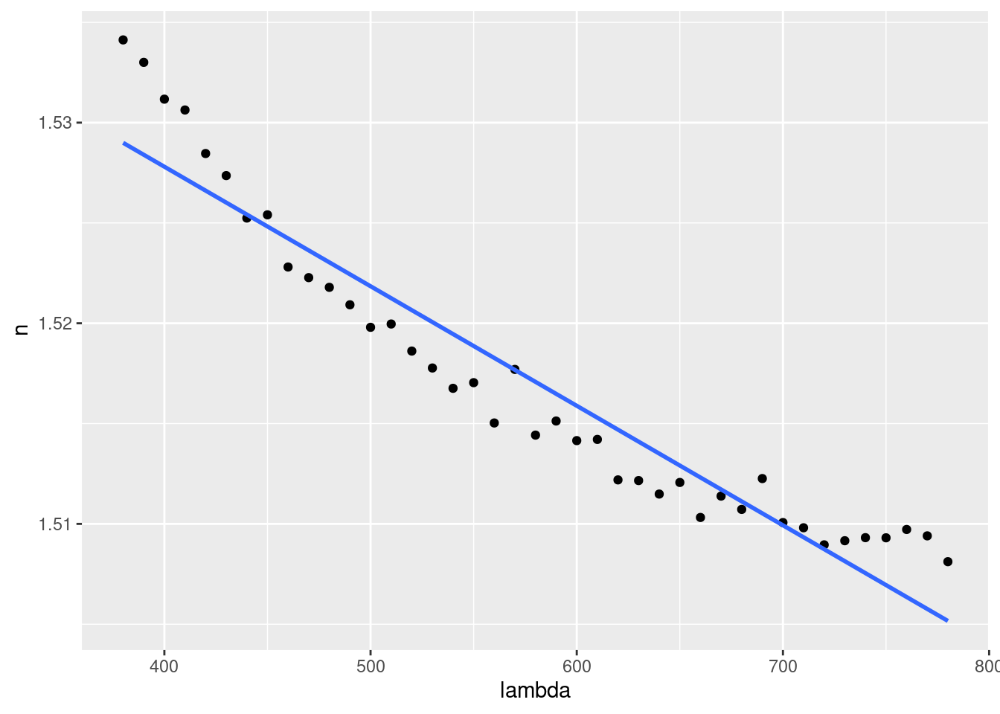
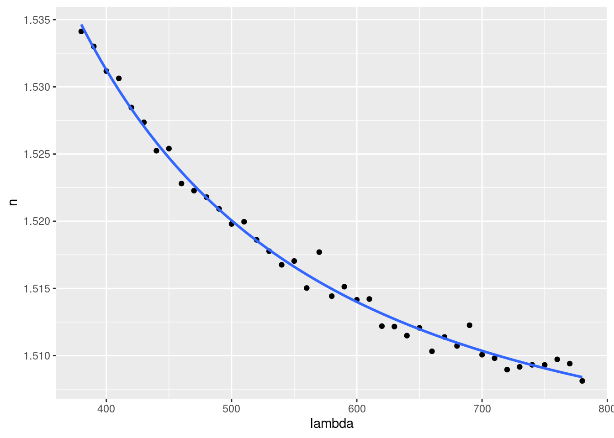

2.4 Gráficos
Gráfico con geom_smooth
ggplot(data = cauchy, mapping = aes(x = lambda, y = n)) +
geom_point() +
geom_smooth(
method = "lm",
formula = y ~ x,
se = FALSE
) 
Gráfico con geom_line y $fitted.values
ggplot(data = cauchy, mapping = aes(x = lambda)) +
geom_point(mapping = aes (y = n)) +
geom_line(
mapping = aes(y = fit_cauchy$fitted.values, group = 1)
)
Gráfico con geom_function y predict
ggplot(data = cauchy, aes(x = lambda, y = n)) +
geom_point() +
geom_function(
fun = function(new_x) {
predict(fit_cauchy, tibble(x = new_x))
}
)